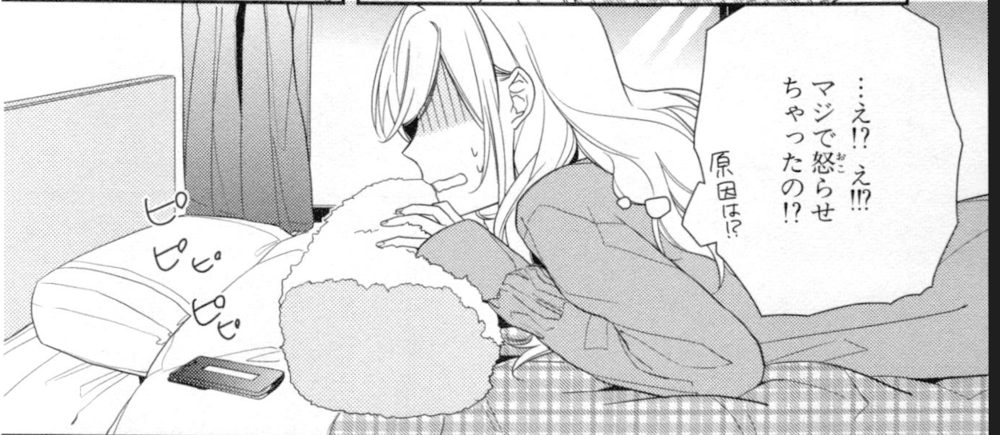
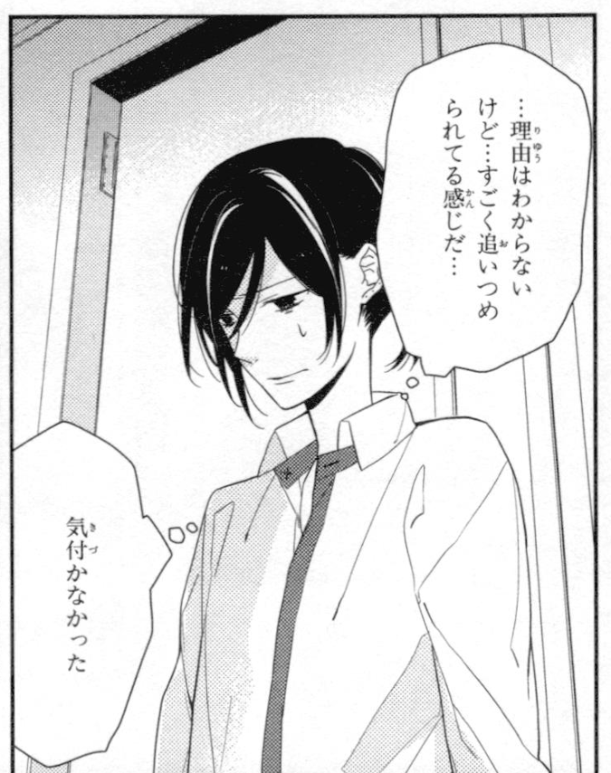
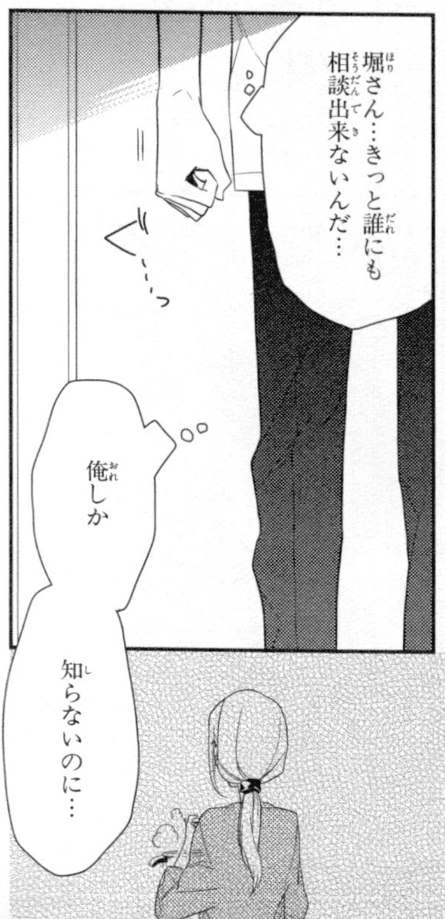

TaeKim
- Various amounts だけ, しか, ～すぎる
- Directions 方、どうやって
- Potential られる, ぇる、こと できる
- Certainty でしょう、だろう、かもしれない、っけ、かな
- Appearance よう、みたい、～そう、らしい、っぽい
ホリミヤ
- けど、が、から、ので、のに, ん、の, Phrasing verb clauses, past+り、 ～し, だけ, しか, ～すぎる 方、 より、 ほど,方、 どうやって
- ～ちゃう
 - Volitional form ～られてる
 - しか
